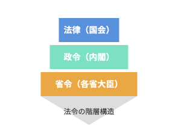

消防法の法体系
結論：消防法のルールは「法律 → 政令 → 省令」の3層でできています（上ほど強く、下ほど細かい）。
- 法律（消防法）：国会が制定。危険物を含む「大枠のルール」を定めます。
- 政令：内閣が制定。法律を実施するために「具体的な基準」を決めます。
- 省令：各省の大臣が制定。現場で運用できるよう「手順・様式レベル」まで細かく定めます。
出る出るポイント！
下位（政令・省令）は上位（法律）に反してはいけない。迷ったら上位から確認。
法律・政令・省令のピラミッド

- 法律：原則（大枠）
- 政令：基準の具体化
- 省令：運用・手続きの詳細
覚え方：国会 → 内閣 → 各省（国→内→省）
用語と仕組み
まずはこの3つ。ここが分かると、後の条文が一気に読みやすくなります。
- 法律（消防法）
国会で制定。危険物を含む「大枠」を決めます。 - 政令（危険物の規制に関する政令）
内閣が制定。「基準」を具体化します。 - 省令（危険物の規制に関する規則）
各省大臣が制定。「運用ルール」を細かく定めます。
まずはここだけ押さえよう!
- 強さ（優先順位）：法律 → 政令 → 省令（上ほど強い）
- 作る人：国会 → 内閣 → 各省（国→内→省）
出る出るポイント！
- 「法令」とだけ書かれている場合は、「消防法」「危険物の規制に関する政令」「危険物の規制に関する規則」の3つ全体をまとめて指す。
- 「法」「政令」「規則」と書かれている場合は、それぞれ「消防法」「危険物の規制に関する政令」「危険物の規制に関する規則」を略して言っていると考える。
ひっかけ注意！
- 危険物の分野では「省令」という言い方でも、名称が「規則」になっている（＝省令なのに“規則”）。ここで混乱させにくる。
- 問題文で「法」「政令」「規則」と短く書かれていたら、まず正式名称に戻して読み替える。
法・政令・規則の例
| 種別 | 条文 |
|---|---|
| 法第13条の2第3項 （免状の交付） |
危険物取扱者免状は、危険物取扱者試験に合格した者に対し、都道府県知事が交付する。 |
| 政令第32条 （免状の交付の申請） |
法第13条の2第3項の危険物取扱者免状の交付を受けようとする者は、申請書に総務省令で定める書類を添えて、 当該免状に係る危険物取扱者試験を行った都道府県知事に提出しなければならない。 |
| 規則第50条第2項 （免状交付申請書の添付書類） |
政令第32条の総務省令で定める書類は、次のとおりとする。
|
まずはここだけ押さえよう!
- 法律：国会が決める「大枠ルール」
- 政令：内閣が動かす「実施ルール」
- 省令：各省が詰める「細かいルール」
出る出るポイント！
- 「法令」とあれば、消防法・危険物政令・危険物規則をまとめて指す。
- 「法」「政令」「規則」と分けて書かれたら、それぞれの略称だと考える。
ひっかけ注意！
- 「省令」＝ 危険物の規制に関する規則（“規則”だけ見て別物と勘違いしやすい）。
- 迷ったら上位から：法律 ＞ 政令 ＞ 省令（下位は上位に反できない）。